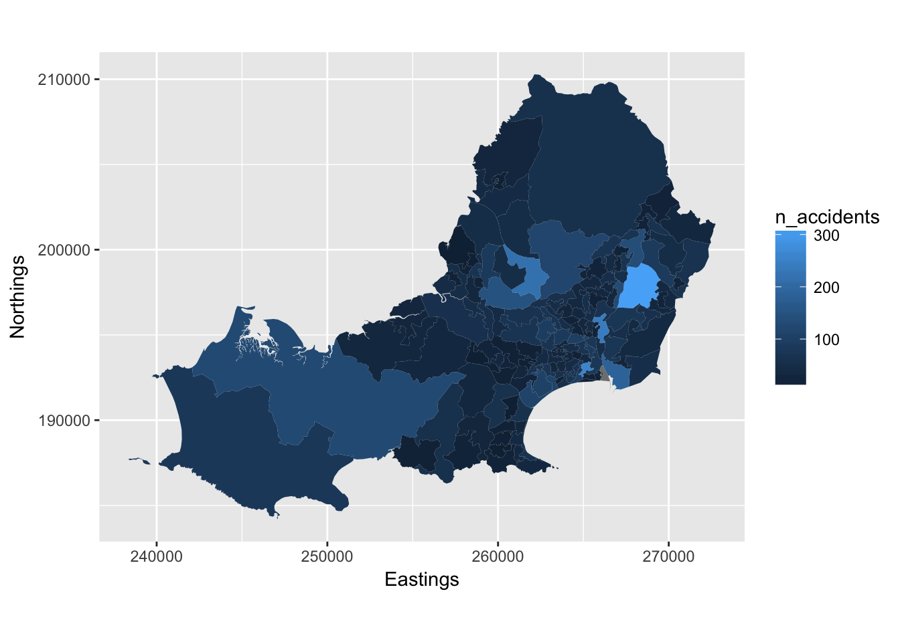
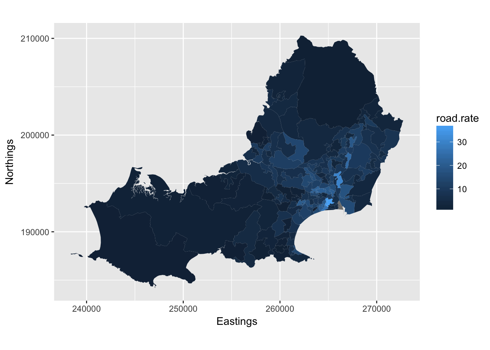
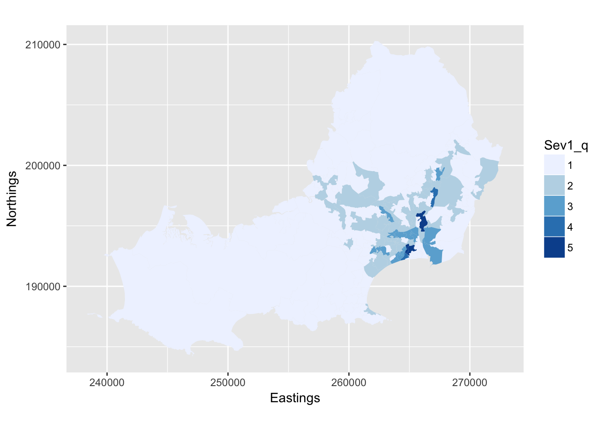

Data Visualization
Lety Kemp | MSc on Health Data Science
Risk rate map - GIS
This page shows some of the methodology of an exploratory data analysis where I used R as a Geographic Information System (GIS) to create risk rates for the region of Swansea, UK.
Adjusted risk rates were calculated and illustrated in a quantile map. The end product was a academic conference poster presented as part of the Data Visualisation module. More details on poster. This site was not part of the assignment, however, I loved working with RStudio and just wanted more!! ♥♥♥
The data sources were Open Data from UK authorities, but directly retrieved from this tutorial by GIS specialist Richard Fry. Richard was the lecturer of the GIS component of Data Visualisation, one of the modules of my Master’s Degree.
The R code below shows how I joined a few datasets to calculate the probability of accidents resulting in death in the region, essetially, using R as a GIS.
This site was also created using RStudio with Rmarkdown, GitHub and Latex integrated. The poster was created in Adobe Illustrator.
With no further ado, the code:
#Assign packages needed
pkgs = c('ggplot2', "plyr", "dplyr", "GISTools", "rgdal", "rgeos", "reshape2",
"DT")
# check installed
new.packages <- pkgs[!(pkgs %in% installed.packages()[, "Package"])]
if (length(new.packages)) install.packages(new.packages)
# load libraries
lapply(pkgs, library, character.only = T)
# Load Spatial Data
bng = "+proj=tmerc +lat_0=49 +lon_0=-2 +k=0.9996012717 +x_0=400000 +y_0=-100000 +ellps=airy +datum=OSGB36 +units=m +no_defs"
# load spatial data - may take some time depending on your laptop
welsh.lsoa <- readOGR(dsn = "wales_lsoa_2011_gen.shp", layer = "wales_lsoa_2011_gen", p4s = bng)Load road summary to obtain the total road Kilometers in order to calculate the risk rates
# load roads file
welsh.roads <- read.csv(file = "road_summary.csv")
# cast rows to columns so we have a col for each road type
welsh.roads <- dcast(welsh.roads, LSOA11CD ~ class)
# create total column
welsh.roads <- welsh.roads %>% mutate(Total_km = rowSums(.[, 2:6], na.rm = T))
# replace NAs with 0
welsh.roads[is.na(welsh.roads)] <- 0Load Stats19, and census files prepared by Richard Fry in this tutorial
Stats19.final <- readRDS("Stats19final.rds")
plot.data <- readRDS("Plotdata.rds")
injury.rates <- readRDS("injuryrates.rds")
# create a count of accidents by LSOA
stats19.lsoa <- Stats19.final %>% group_by(id) %>% dplyr::summarise(n_accidents = n())
# plot to check the accidents are where we hope - i.e. Wales
qplot(data = Stats19.final, x = Stats19.final$Location_Easting_OSGR, y = Stats19.final$Location_Northing_OSGR, xlab = "Eastings", ylab = "Northings") + coord_equal()
# join road data to previous table
injury.rates <- left_join(injury.rates, welsh.roads)
# load swansea area
swansea.lsoa <- readOGR(dsn = "./swansea.lsoa.2011.shp", layer = "swansea.lsoa.2011", p4s = bng)
swansea.lsoa@data <- plyr::rename(swansea.lsoa@data, c(LSOA11CD = "code"))
# fortify
swansea.lsoa.fortify <- fortify(swansea.lsoa, region = "code")Join injury rates and visualise in Swansea map
# join injury rates to new geometry
plot.data <- left_join(swansea.lsoa.fortify, injury.rates)
# Map the injury rates
ggplot() + geom_polygon(data = plot.data, aes(x = long, y = lat, group = group,
fill = n_accidents), colour = "grey", size = 0) + coord_equal() + xlab("Eastings") + ylab("Northings")
# Filter severity fields from imported 'Stats19.final' file
Severity <- Stats19.final
Severity <- subset(Stats19.final, select=c("Accident_Severity", "id"))
# Cast rows to columns so we have a col for each Severity level
Severity.casted <- melt(Severity)
# Count all severity types accidents, per type - columns Sev 1, 2 and 3
Severity.casted <- mutate(Severity.casted, Sev1 = ifelse(value == 1, 1, 0))
Severity.casted <- mutate(Severity.casted, Sev2 = ifelse(value == 2, 1, 0))
Severity.casted <- mutate(Severity.casted, Sev3 = ifelse(value == 3, 1, 0))
# Group by and summarise each severity by Swansea lsoa locality(id) prior to joining
Severity.counts <- Severity.casted %>% group_by(id) %>% summarise(count_Sev1 = sum(Sev1), count_Sev2 = sum(Sev2), count_Sev3 = sum(Sev3))
# Join severity to injury rates (plot.data)
Severity.rates <- dplyr::left_join(plot.data, Severity.counts)
# Calculate basic rates on n.accident over total road Km
Severity.rates$road.rate <- Severity.rates$n_accidents/Severity.rates$Total_km
# map basic rates rates to show spatial distribution in Swansea
ggplot() + geom_polygon(data = Severity.rates, aes(x = long, y = lat, group = group,
fill = road.rate), colour ="grey", size = 0) + coord_equal() + xlab("Eastings") +
ylab("Northings")
Replace NA values with 0 to avoid NA showing on map
# change incomplete to NA
is.na(Severity.rates) <- sapply(Severity.rates, is.infinite)
# zero out NA
Severity.rates[is.na(Severity.rates)] <- 0Calculate adjusted rates for severity type 1 accidents by km of road and show on final map
#Create refined rates for Severity 1 (fatal) using basic rate
Severity.rates$Sev1_rate <- Severity.rates$count_Sev1/(Severity.rates$n_accidents * Severity.rates$road.rate)
# Map the refined rates for Severity 1 (fatal)
ggplot() + geom_polygon(data = Severity.rates, aes(x = long, y = lat, group = group,
fill = Sev1_rate), colour = "grey", size = 0) + coord_equal() + xlab("Eastings") +
ylab("Northings")
#Quintile for Severity 1 Rate - final map for poster
Severity.rates$Sev1_q <- cut(Severity.rates$road.rate, 5, labels = c("1", "2", "3", "4", "5"))
ggplot() + geom_polygon(data = Severity.rates, aes(x = long, y = lat, group = group, fill = Sev1_q), colour = "grey", size = 0) + scale_fill_brewer(type = "seq", palette = "Blues") + coord_equal() + xlab("Eastings") + ylab("Northings")
The above map was used on final poster